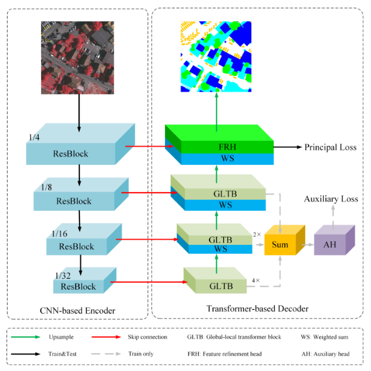
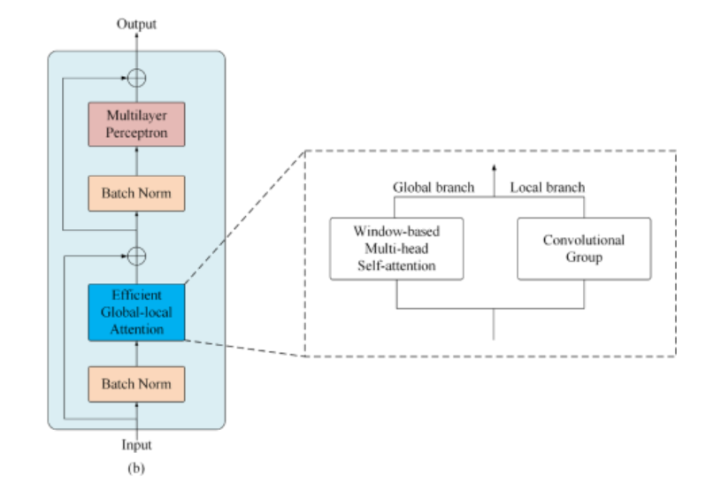

Network¶
Architecture Overview¶
In this section, we’ll briefly discuss the architecture of the UNetFormer to aid in making and understanding any future changes in the structure. The easiest way to understand UNetFormer is by starting discussion with the traditional UNet.
{kind=link}
It has UNet-like symmetrical downscaling and upscaling paths (4 levels).
Skip connections - the feature maps generated by each stage are fused with the corresponding feature maps of the decoder by a 1x1 convolution along the channel dimension.
In CNN-based encoder, compared to UNet, the simple 2d convs are replaced with ResBlocks (currently using RenNet17) to take advantage of pre-trained models to allow for deeper information encoding. This parameter can be easily changed in the network settings.
In Transformer-based decoder, the transpose convolutions are replaced with a GLTB (Global Local Transformer Block) shown in the figure below. Use of transformer here is one of the novelties introduced by this research and it allows for much better context understanding thanks to efficient window-based multi-head self-attention and cross-shaped window context interaction module.
{kind=link}
Losses¶
We have 2 types of losses, a principal loss that combines cross entropy and dice loss, and an auxiliary loss (cross entropy) pulled from each of the layers. More precisely, the auxiliary head takes the fused feature of the three Global-Local Transformer blocks (as seen in the architecture overview image) as the input and constructs a 3x3 convolution layer with batch normalization and ReLU, a 1x1 convolution layer and an upsampling operation Finally, overall loss is the sum of principal and auxiliary (with a multiplication factor alpha).